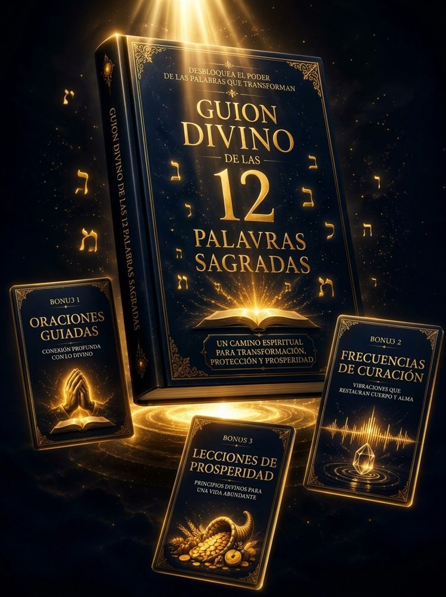

El Altar de las 12 Palabras
Sintoniza tu corazón con el Cielo. Como enseñó el Padre Antonio: cuando la frecuencia del alma se une al Verbo, las puertas cerradas se abren solas.
Vacía tu pecho de toda aflicción antes de orar. Sigue la pulsación del círculo sagrado:
“Estad quietos, y conoced que yo soy Dios.” — Salmo 46:10
¿Qué necesita tu corazón en este momento?
Toca tu estado actual para recibir la Palabra y Promesa exacta de Dios:
Las 12 Palabras en Hebreo
Toca cada código sagrado para vocalizar su sonido y activar su virtud en tu espíritu:
Vela Sagrada de Conexión
Enciende la llama a diario para sellar tu casa en la provisión inagotable.
"Y mi Dios proveerá a todas vuestras necesidades, conforme a sus riquezas en gloria en Cristo Jesús."
— Filipenses 4:19Nadie reza en soledad
Únete a Gabriel Luz y miles de hermanos en la fe.
Oraciones Guiadas Completas
Plegarias consagradas en 5 tiempos litúrgicos para cada necesidad profunda de tu vida.
Purificación del Recipiente: Inhala en 4s, retén 7s y exhala en 8s. Vacía tu mente de quejas, temores y aflicciones.
Anclaje del Corazón: Lleva tu mano derecha al centro del pecho. Siente el latido sagrado: ahí reside el templo de Dios.
Vocalización Sagrada: Pronuncia la oración con voz firme y serena, dejando resonar los nombres hebreos en tu habitación.
Sello del Agradecimiento: Declara con fe inquebrantable: “Amén, hecho está. La abundancia divina ya es mía.”
Biblioteca y Entregables
Tus libros sagrados, manuales de activación y bônus de la VSL en un solo lugar.

Libro PrincipalEl Guion Divino de las 12 Palabras Sagradas
El manuscrito oficial completo: la historia de Teodosio I, la ciencia de las 12 palabras, el protocolo de 21 días y la biblioteca de oraciones.
Acelerador del Guion Divino 10X
El protocolo de choque de 7 días y la reprogramación en estado Theta para manifestar respuestas inmediatas en tus finanzas y salud.
 Protección Angelical
Protección Angelical
El Libro Sagrado del Ángel de la Guarda
La guía completa de los 7 Santos Arcángeles de la semana, tu ángel custodio según tu nacimiento y el ritual del Escudo de San Miguel.
Comunidad de Fe y Milagros
Hermanos orando juntos en tiempo real por el mundo entero.
Mi Altar y Cuaderno de Milagros
Entrega tus peticiones personales y celebra cada gracia recibida.
Tu Ángel de la Guarda Personal
Revelación según tu NacimientoIngresa tu fecha de nacimiento para conocer el arcángel que custodia tu vida y tu familia:
Garantía Incondicional de 60 Días
Aplica las 12 palabras cada día. Si por cualquier motivo no sientes la paz, la provisión o la transformación en tu vida, Gabriel Luz te reembolsa el 100% de tu dinero sin preguntas ni trabas.